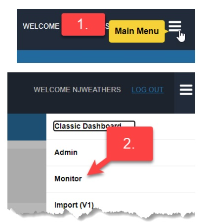
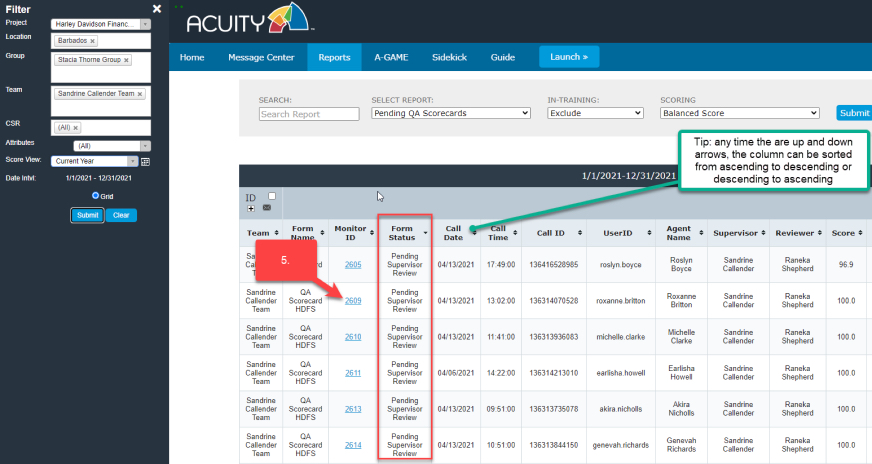
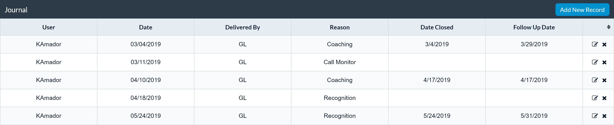
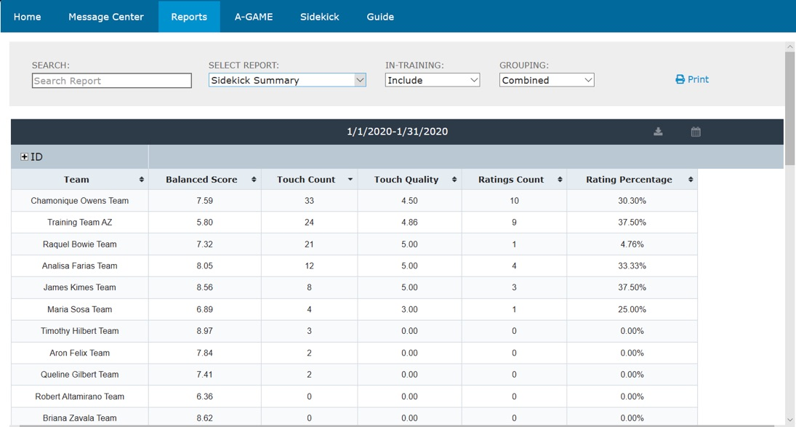

- Dashboard Basics
- Sub-KPI Drill-Down
- Communications and Support
- Filters and Views
- Performance Trend Report
- Tabular or "Spreadsheet" Views
- Report Settings
-
Compliance Audit Process - Compliance Audit Status Descriptions & Workflow
- Compliance Audit Workflow
- Creating Compliance Audit Form
- Compliance Dispute Review
- Supervisor Review
- Completing Compliance Audits in Draft Mode
- Supervisor Coaching
- Agent Confirmation
-
QA Scorecard Process - QA Scorecard Status Descriptions & Workflow
- Creating QA Scorecard
- Completing QA Scorecards in Draft Mode
- Supervisor Review
- QA Dispute
- Supervisor Coaching
- Agent Confirmation
-
Sidekick - - Accessing Sidekick
- The Sidekick Journal
- Adding a Journal Entry
- Performance Trend
- Touch Count / Touch Rank
- Touch Rank
- Trailing Twelve month (TTM) Average - Touch Count / Performance Trend
- Sidekick Touch Quality
- Reporting
-
Download Guide (PDF) -
Back to Top
Acuity Performance Management System - Quick Start Guide
Acuity is designed to inform, align, engage and develop agents, mangers and other employees. It's easy to use and has a range of great features to help you succeed! This guide will help you become familiar with the system and become proficient in its basic operation.
Dashboard Basics
Once logged in to Acuity, a dashboard will display your performance scores (actual data values as well as corresponding performance scores and levels).
The number on the top of the gauge in the upper left section of the filter panel indicates your current overall aka "balanced score" (refreshed at least daily). The gauge is divided into color-coded performance levels and scoring resets with the start of each pay period or other defined basis.
Each KPI for which you are responsible, and that make up the balanced score, is displayed so that you can quickly and easily monitor progress and pinpoint your strengths and areas that require improvement.
The weight (or relative importance) for each KPI is included in the label underneath the bar and positioning the cursor over the bar will also display KPI details.
Sub-KPI Drill-Down
Double-clicking a specific KPI will either render a tabular view of the underlying data or display the sub-KPIs (aka KPI split) that comprise the primary KPI (see screen shot below), enabling the specific area of weakness to be pinpointed with deep granularity.
Communications and Support
Message
Communication may also be facilitated via Acuity's conventional Messaging feature accessible via the envelope icon. A round marker next to the envelope icon will indicate when a new message has been received.
Chat
Acuity has built-in chat functionality for either Live Chat or Group Chat.
Live Chat: Allows users to chat with others who are logged in to Acuity. Agents can chat with supervisors or other members of management that are logged in and online. They can not chat with other agents.
Group Chat: Supervisors and management can create group chats. Chat recipients do not need to be online chat. New messages will appear upon log-in. Agents cannot create a group chat but they can participate in the group chats.
-
Create a group: Below are the steps for creating a group:
-
Edit group: Once a group is created, click on the
group name and "edit group" to add or remove the members of the chat group:
-
Chat: Once a group is created, click on the group name and begin the chat.
-
New Chat Message Notifications:
the chat icon at the top of the screen will show if there are new chat
messages. New chats will appear next to each group containing new
chats. Click on the group name to read the chat messages in the group.
-
Chat History:
the chat history will appear in the window for each chat group.
Filters and Views
Filters located in Acuity's left panel - enabled or disabled based on role - determine what information is displayed in the main report window.
To isolate a specific KPI, use the KPI filter. To view historical performance, select a previous date range from the Score View filter.
TIP: after selecting filters, click the Submit button to run the new or modify the existing report.
Performance Trend Report
To view historical trends of overall or KPI-specific score,
click Trend and set the desired beginning and end dates using the slider.
Tabular or "Spreadsheet" Views
Prefer a tabular view of the data? Select the Grid button and click Submit. Or click on a specific KPI bar in the Bar view to invoke a spreadsheet style report.
Report Settings
Acuity Settings allow you to change the report display appearance. Performance Colors reflect KPI performance as calibrated to defined target levels (A/B/C...). The Series Colors options apply a distinct color to each KPI bar.
Settings can include or exclude In-Training Scores.
If specific hire dates are required, they can be set in the Hire Date range filter above.
Compliance Audit Process
Compliance Audit Status Descriptions & Workflow
WORKFLOW
Creating Compliance Audit Form
This step is performed by Compliance.
-
After logging into Acuity, click on the Main Menu in the upper right-hand corner.

- Select Monitor
- Project: Select the project
- Evaluation Form: Compliance Audit. Note: The Compliance Audit form can only be created by Compliance and Admin.
- Agent: Click CSR radio button and select the agent from the dropdown menu Non-Agent: Click Other radio button and select the name from the dropdown menu NOTE: these dropdown employee lists are populated from the roster file for associates assigned to the project.
- Enter Call ID
- Enter Call Date & Time - calendars & clocks icons are available for selecting the date/time
-
Click: Evaluate and a new Compliance Audit form will be displayed.
-
Complete the fields on the form.
Rating / notes - there are 6 rating options. When the audit is first created, the rating should be Pass or Fail (see the Compliance Workflow diagram at the beginning of this section). Some of these Ratings will automatically complete the audit.
- Pass - will auto-complete
- Fail - Moves the status to "Pending Supervisor Review"
- Unresolved - Moves the status to "Pending Supervisor Review"
- Unclear - will auto-complete the audit
- Dispute Valid - will auto-complete the audit
- Tech - will auto-complete the audit
- Save as Draft: this will allow the Compliance Auditor to return and complete the Audit later. Audit forms always begin in the Draft mode. Note: Drafts are only visible to Compliance and Admin.
-
Save Audit: this saves the Audit.
- If the Rating is Pass, the Audit will automatically be marked as "Complete".
- If the Rating is Fail, the Audit will move to the next status, "Pending Supervisor Review".
- Delete: deletes the form. The delete button is only available for Compliance and there is a prompt to confirm if it should be deleted.
- Close: this will close the Scorecard without saving.

Completing QA Scorecards in Draft Mode
The Compliance Audits that are in draft status can be viewed in the Pending QA Scorecards and Audits report. Anyone with access to create Compliance Audits will have the ability to complete an audit that is in draft status.
- Click on the Reports tab.
- Select the Pending QA Scorecards and Audits report from the dropdown menu.
- Set the data filters in the filter panel (project, location, group, team, CSR, score view)
-
The results will appear in the window along with any Scorecards and Audits that are in process regardless of the date range.

- Click on the arrow of any column to sort the report. This report will show any pending or incomplete QA Scorecard or Compliance Audit.
-
Click on the Monitor ID of the "In Draft" with the Form Name
"Compliance Audit". The Audit form will open in a separate window.
-
To complete the Audit that is “In Draft” and click Update/Send. This
will move the Audit to the next step in the workflow.
Supervisor Review
After the Compliance Audit has been created and saved, the next step in the workflow is the Supervisor Review. The assigned supervisor at the time the Compliance Audit was created will be responsible to review the Scorecard and coach the agent. To review the Compliance Audit, the supervisor will complete the following steps:
- Click on the Reports tab.
- Select the Pending QA Scorecards and Audits Report
- Open the Filter panel to change and of the search parameters (project, LOB, Team, CSR or Score View).
-
Click Submit to run the report. The results will appear in the window
along with any QA Scorecards and Audits that are in process regardless of the date range.
- Click on the arrow of any column to sort the report. This report will show any pending or incomplete QA Scorecard or Compliance Audit.
-
Click on the Monitor ID of any form that is "Pending Supervisor Review"
with the Form Name "Compliance Audit". The Audit form will open in a
separate window.
-
The Supervisor Review Section is located at the bottom of the Compliance
Audit form. The Supervisor can either agree with the audit or dispute it.
Select one of these options.
- If the audit is disputed, the Supervisor must include a reason in the text box provided. This Scorecard will go back to Compliance to review the dispute.
-
When the review is complete, click Update.
- If the Supervisor Agrees with the assessment the next status is Pending Supervisor Coaching.
- If the Supervisor Disputes the assessment the next status is Pending Dispute Review. After Compliance reviews the Dispute, the next status is Pending Supervisor Coaching depending on the outcome.
-
If Close is clicked, the QA Scorecard will close and will remain in
Pending Supervisor Review status.
Compliance Dispute Review
After the Compliance has been reviewed and disputed by the Supervisor, the next step in the workflow is Pending Dispute Review. Compliance will now review the dispute by completing the following steps:
- Click on the Reports tab.
- Select the Pending QA Scorecards and Audits report from the dropdown menu.
- Set the data filters in the filter panel (project, location, group, team, CSR, score view)
-
The results will appear in the window along with any Scorecards and
Audits that are in process regardless of the date range.

-
Open any audit that is in the Pending Dispute Review status and the
audit will open in a separate window.
-
After reviewing the dispute, Compliance will make their final decision
on the audit. Any of the audit fields can be updated along with the audit
Rating. A text field is provided for comments regarding the Dispute Review.
Rating / notes - there are 6 rating options. If the Rating is changed during the Dispute Review, the following will be the outcomes after the review.
- Pass - will auto-complete
- Fail - Moves the status to "Pending Supervisor Coaching"
- Unresolved - Moves the status to "Pending Supervisor Coaching"
- Unclear - will auto-complete the audit
- Dispute Valid - will auto-complete the audit
- Tech - will auto-complete the audit
-
When the Dispute Review is complete, click Update.
Note: Delete will delete the audit. This is only to be used in rare
circumstances. Deleted monitors are logged and reviewed. Close will
close without saving and the audit will remain in Pending Dispute
Review status.
Supervisor Coaching
After the Compliance reviewed and approved by the Supervisor or the Dispute has been reviewed by Compliance, the next step in the workflow is Supervisor Coaching. The assigned supervisor at the time the audit was created will be responsible to review the Scorecard and coach the agent. The Supervisor will document the coaching in the Compliance Audit form and will complete the following steps:
- Click on the Reports tab.
- Select the Pending QA Scorecards and Audits report from the dropdown menu.
- Set the data filters in the filter panel (project, location, group, team, CSR, score view)
-
The results will appear in the window along with any Scorecards and
Audits that are in process regardless of the date range.
-
Open any Compliance Audit with the Pending Supervisor Coaching Status
and the audit will open in a separate window.
- The Supervisor must select a Resolution.
- A text field is provided to document the coaching.
- Click the box Supervisor Coaching is Complete.
-
When complete, click Update. Once Updated, the next status will be Pending Agent Confirmation.
Note: The check box is not checked or if Closed is clicked, the Compliance Audit will close and remain in Pending Supervisor Review status.
Automated Acuity Process to document the Coaching Interaction:
When Supervisor Coaching is complete in the Compliance Audit, an Auto-generated Journal Entry will be created in Sidekick to document the coaching interaction. The Journal Entry category for Auto-generated Journal Entry from the Compliance Audit will be designated as "Coaching-Compliance Audit". The agents do not receive a separate message notification regarding the Journal Entry since they will see the coaching comments when they confirm the coaching interaction in the Compliance Audit.
Below is a screenshot of an example of an Auto-generated Journal Entry from Sidekick:
Agent Confirmation
After the Compliance Audit has been reviewed and the Agent has been coached on the Audit, the next step is for the Agent to confirm that the coaching was complete. This step in the workflow is Pending Agent Confirmation. The Agent will complete the following steps:
- Click on the Reports tab.
- Select the Pending QA Scorecards and Audits report from the dropdown menu.
- Set the data filters in the filter panel (project, location, group, team, CSR, score view)
-
The results will appear in the window along with any Scorecards and
Audits that are in process regardless of the date range.
-
Open any Compliance Audit with the Pending Agent Confirmation status
and the audit will open in a separate window.

- A text box is available for the Agent to enter any comments or feedback on the coaching experience.
- Click the Agent Confirmation of Supervisor Coaching & Review checkbox.
-
When complete, click Save Audit. Once saved, the audit will be complete.
Note: The check box is not checked or if Closed is clicked, the Compliance Audit will close and remain in Pending Agent Review status.
QA Scorecard Process
QA Scorecard Status Descriptions & Workflow
WORKFLOW
Creating QA Scorecard
This step is performed by Quality. Note: Some of the screenshots below may be from the Harley (HDFS) scorecard however, the process is the same for all QA Scorecards.
-
After logging into Acuity, click on the Main Menu in the upper right-hand corner.
- Select Monitor
- Project: Select the project
- Evaluation Form: Select the scorecard
- Agent: Select the agent from the dropdown menu
- Enter Call ID
- Enter Call Date & Time - calendars & clocks icons are available for selecting the date/time
-
Click: Evaluate and a new QA Scorecard monitor will be displayed.
- Complete the fields on the scorecard, the scores are automatically calculated based on the evaluation.
- Save as Draft: this will allow the QA Specialist to return and complete the Scorecard later. Monitors always begin in the Draft mode. Drafts are not visible to non-QA roles.
- Save Monitor: this saves the Scorecard and moves it to the next status of Pending Supervisor Review.
- Delete: deletes the Scorecard. The delete button is only available for QA and there is a prompt to confirm if a Scorecard should be deleted.
- Close: this will close the Scorecard without saving.
Completing QA Scorecards in Draft Mode
The QA Scorecards that are in draft status can be viewed in one of two reports: QA Scorecard Log or the Pending QA Scorecards. Anyone with access to create Scorecards will have the ability to complete a Scorecard in draft status.
- Click on the Reports tab.
- Select the Pending QA Scorecards report from the dropdown menu. Note: the draft Scorecards can also be accessed from the QA Scorecard Log report.
- Set the data filters in the filter panel (project, location, group, team, CSR, score view (date range)
-
Click Submit to run the report. The results will appear in the window to the right.
- Click on the arrows to sort the report by this column.
-
Click on the Monitor ID of the "In Draft" Scorecard. The Scorecard will
open in a separate window.
-
To complete the scorecard that is in draft and click Update/Send. This will
move the Scorecard to the next step in the workflow, Pending Supervisor Review.
NOTE: If a non-QA roll attempts to access a Scorecard that is in Draft status, the following message will appear:
Supervisor Review
After the Scorecard has been created and saved, the next step in the workflow is the Supervisor Review. The assigned supervisor at the time the Scorecard was created will be responsible to review the Scorecard and coach the agent. To review the Scorecard, the supervisor will complete the following steps:
- Click on the Reports tab.
- Select the Pending QA Scorecards.
- Open the Filter panel to change and of the search parameters such as data range (Score View). Tip: there may be pending scorecards from previous months. A good practice is to select "current year" in the Score View to view all pending scorecards.
-
Click Submit to run the report. The results will appear in the window
along with any Scorecards that are in process.
-
Open any Scorecard that is in the Pending Supervisor Review status
and the QA Scorecard will open in a separate window.
 - The Supervisor Review Section is located at the bottom of the QA Scorecard. The Supervisor can either agree with the assessment or dispute the assessment. Select one of these options.
-
If the Scorecard is disputed, the Supervisor must include a reason in
the text box provided. This Scorecard will go back to QA to review
the dispute.
- When the review is complete, click Update. If the Supervisor Agrees with the assessment the next status is Pending Supervisor Coaching.
- If the Supervisor Disputes the Assessment the next status is Pending QA Dispute. After QA reviews the Dispute, the next status is Pending Supervisor Coaching.
-
If Close is clicked, the QA Scorecard will close and will remain
in Pending Supervisor Review status.
QA Dispute
After the Scorecard has been reviewed and disputed by the Supervisor, the next step in the workflow is the QA Dispute review. QA Specialist will now review the dispute by completing the following steps:
- Click on the Reports tab.
- Select the Pending QA Scorecards.
- Open the Filter panel to change and of the search parameters such as data range (Score View). Tip: there may be pending scorecards from previous months. A good practice is to select "current year" in the Score View to view all pending scorecards.
-
Click Submit to run the report. The results will appear in the window
along with any Scorecards that are in process.
-
Open any Scorecard that is in the QA Dispute status and the QA
Scorecard will open in a separate window.
- QA will complete the dispute review by entering their comments into the text box provided.
-
When the QA Dispute review is complete, click Update. Once Updated, the
next status will be Pending Supervisor Coaching.
- If Close is clicked, the QA Scorecard will close and will remain in QA Dispute status.
-
Delete is available only to QA and a warning will pop-up if clicked
to confirm if the Scorecard should really be deleted.
Supervisor Coaching
After the Scorecard reviewed and approved by the Supervisor or the Dispute has been reviewed by QA, the next step in the workflow is Supervisor Coaching. The assigned supervisor at the time the Scorecard was created will be responsible to review the Scorecard and coach the agent. Once coaching on the Scorecard has occurred, the Supervisor will document it and will complete the following steps:
- Click on the Reports tab.
- Select the Pending QA Scorecards.
- Open the Filter panel to change and of the search parameters such as data range (Score View). Tip: there may be pending scorecards from previous months. A good practice is to select "current year" in the Score View to view all pending scorecards.
-
Click Submit to run the report. The results will appear in the window
along with any Scorecards that are in process.
-
Open any Scorecard that is in the Pending Supervisor Coaching status
and the QA Scorecard will open in a separate window.
- The Supervisor enter Coaching comments from their coaching session with the agent in the text box provided.
- Click the box Supervisor Coaching is Complete.
-
When complete, click Update. Once Updated, the next status will be
Pending Agent Confirmation.
-
If Close is clicked, the QA Scorecard will close and will remain
in Pending Supervisor Coaching status.
-
If Close is clicked, the QA Scorecard will close and will remain
in Pending Supervisor Coaching status.
Automated Acuity Process to document the Coaching Interaction:
When Supervisor Coaching is complete in the QA Scorecard, an Auto-generated Journal Entry will be created in Sidekick to document the coaching interaction. The Journal Entry category for Auto-generated Journal Entry from the Compliance Audit will be designated as "Coaching-QA Scorecard". The agents do not receive a separate message notification regarding the Journal Entry since they will see the coaching comments when they confirm the coaching interaction in the QA Scorecard.
Below is a screenshot of an example of an Auto-generated Journal Entry from Sidekick:
Agent Confirmation
After the Scorecard reviewed and the Agent has been coached on the Scorecard, the next step is for the Agent to confirm that the coaching was complete. This step in the workflow is Pending Agent Confirmation. The Agent will complete the following steps:
- Click on the Reports tab.
- Select the Pending QA Scorecards.
- Open the Filter panel to change and of the search parameters such as data range (Score View). Tip: there may be pending scorecards from previous months. A good practice is to select "current year" in the Score View to view all pending scorecards.
-
Click Submit to run the report. The results will appear in the window
along with any Scorecards that are in process.
-
Open any Scorecard that is in the Pending Agent Confirmation status
and the QA Scorecard will open in a separate window.
- Click the Agent Confirmation of Supervisor Coaching & Review checkbox.
-
When complete, click Update. Once Updated, the next status will be Complete.
-
If Close is clicked, the QA Scorecard will close and will remain
in Pending Agent Confirmation status.
-
If Close is clicked, the QA Scorecard will close and will remain
in Pending Agent Confirmation status.
Sidekick - Digital Ally for the Frontline Superhero
Sidekick is an intelligent system for coaching, recognition, review, and performance management integrated with the Acuity contact center performance management platform.
Using Sidekick is Easy...
Accessing Sidekick

- Log into Acuity.
- Select an agent from the CSR (or similar label) drop down.
- Click Sidekick from the menu and it will load in the context of the selected agent.

The Sidekick Journal
The Sidekick Journal provides a place to document all of the interactions, such as coaching, recognition, monitors, goal-setting, etc., between team leaders (aka supervisors, etc.) and their agents. Adding journaling to your regular frontline management routine will ensure that you never have to guess with whom or in what ways you've lead and developed your team. The Journal is your reliable digital system of record.
Using the Journal is easy. By default, journal entries are listed in table format by Entry Date (most recent on top). Columns are sortable so that this view can be adjusted as desired.
Adding a Journal Entry
As you prepare to initiate a coaching session or other form of support interaction with an agent, click the blue Add New Record button located in the top right corner of the Journal.

- Fill in the Entry Date (current or past) and Delivered By fields.
- Select a Reason or Category of support type: Coaching, Recognition, Goal-setting, and Call Monitor are defaults, but other options may be presented.
- Enter notes/comments in the Details/Issues and Resolution/Follow-up fields to adequately document the support activity.
- If applicable, specify details for performance Goals in the Set Goal section per the relevant KPI and a date for Follow-up.
- Once the form is complete, click the Submit button and the new entry will appear in the Journal table.
Performance Trend
The Performance Trend displays the day-by-day performance scores by Balanced Score or specific KPI for either the Current or Last Month. The Performance Trend view also includes all of the journal entries recorded that same month. In this way, it's easy to visualize the impact of your agent support activities. Trend lines display performance for the focus agent as well as the team average. Mouse-over the dots on the black or blue trend lines will display details about the KPI or Balanced Score. Mouse-over the green dots on the x axis will display the summary for the Journal entry. Clicking the green dot will open the full Journal entry.

Touch Count / Touch Rank
Touch Count
Touch Count and Touch Rank reports provide context about the frequency of your interactions with agents and how this routine correlates with performance. Touch Rank looks at three data points:
- This CSR: Mouse-over the black bar shows the number of interactions ("touches") with the focus agent in the current month. Mouse-over the blue bar shows the average number of touches for the focus agent up to the past six months.
- Team Average: Mouse-over the black bar shows the average number of interactions ("touches") across all agents on the team. Mouse-over the blue bar shows the average number of touches across all agents on the focus team for up to the past six months.
- All CSRs: Functions just like Team and This CSR, but across all CSRs within the same department, program, or other comparable group.

Touch Rank
Touch Rank displays the number of "touches" and Balanced Score for each of the agents on the specified team. The focus agent is highlighted in red. The second column shows the number of touches (supervisor/team lead support interactions). The third column displays the Balanced Score (total performance score reflective of all weighted KPIs). Each column can be sorted to customize the view or be adjusted by Current and Last Month.
Trailing Twelve Month (TTM) Average - Touch Count/Performance Trend
The Trailing Twelve Month trend chart displays the average Touch Count per agent over the most recent 12 month period. The black line reflects the focus team and the blue line reflects the average across all teams performing the same or similar function. The view can be adjusted to display the Trailing Twelve Month Performance Score (Balanced Score) for the focus (Your) or All Teams using the toggle switch at the top right corner of the chart.

Sidekick Touch Quality
The new Sidekick Touch Quality feature provides supervisors with real-time insight into the support quality delivered to their agents. Touch Quality allows employees to anonymously rate each one of their interactions with their supervisor on a scale from 1 to 5. The addition of Touch Quality to the Sidekick support system produces a continuous measure of employee satisfaction and ensures the integrity of support delivery.
Touch Quality Workflow
-
Touch Quality is a process that takes place after a Sidekick
Journal entry has been completed by a supervisor for one of their
agents

-
Once a journal entry has been submitted for an agent, an
automatic notification is sent to the agent to acknowledge and
anonymously rate that interaction with their supervisor
-
The automatic notification will be received via the message
center inside of Acuity, which can be accessed by clicking
the Envelope Icon or clicking "Message Center" and opening the
notification message

-
The notification message will include the following information (also pictured below):
- Date the journal entry was submitted
- Reason for the entry (example: Coaching or Recognition)
- Details or Issues that were discussed (areas of opportunity)
- Resolution or Follow Up notes (action plan)
- Any goals that were set (Note: if no goals were set, no data will appear)
- Link to rate the recent support experience

-
The automatic notification will be received via the message
center inside of Acuity, which can be accessed by clicking
the Envelope Icon or clicking "Message Center" and opening the
notification message
-
To rate the interaction, agents will simply click the blue link
that reads, "Please Acknowledge and Rate Your Recent Support
Experience" which will open a window that allows the employee
to select between one and five stars to rate the interaction
-
NOTE: ALL RATINGS ARE ANONYMOUS TO SUPERVISORS

-
NOTE: ALL RATINGS ARE ANONYMOUS TO SUPERVISORS
-
Once ratings are submitted, supervisors and managers will be
able to track their Touch Quality scores through the Sidekick
page, using the Touch Quality chart

-
The "My Team" score is the average score of all ratings
received for the selected supervisor's team during the chosen
date range
- There are currently two date range options: Current Month and Previous Month
-
The "All Team" score is the average score of all ratings
received for all teams assigned to the selected Project
- This provides supervisors and managers with the ability to compare employee satisfaction against multiple teams, and the average for all teams
- Additional information is provided along the bottom of the graph, which includes the number of entries (journal entries submitted), number of ratings (how many of the entries have been acknowledged and rated), and the ratio (Ratings / Number of Entries)
-
The "My Team" score is the average score of all ratings
received for the selected supervisor's team during the chosen
date range
Reporting
-
Management can easily track and view the Touch Quality data,
along with additional Sidekick data, through the Reports menu on
the Main Dashboard

-
The Sidekick Summary report provides a summary of Sidekick data
for the selected team(s)
-
The filters on the left can be used to filter the data that
populates in the report
- Selecting "Each" in the Team filter will populate data for each team associated with the selected Project
- Selecting "Each" in the CSR filter will populate data for each CSR associated with the selected Team or Project
-
Data shown includes:
- Team Name or CSR Name
- Balanced Score (Overall Balanced Score for the team or CSR)
- Touch Count (Total number of journal entries submitted for the team or CSR)
- Touch Quality (Touch Quality rating from the team or CSR)
- Ratings Count (Total number of ratings received from the team or CSR)
- Rating Percentage (Ratings Count / Touch Count)

-
The filters on the left can be used to filter the data that
populates in the report
Back to Top